Cani in condominio: quando il divieto è legittimo
Il divieto di tenere animali domestici in condominio non è sempre efficace. Tutto dipende dalla natura del regolamento che lo contiene: nullo se imposto dall'assemblea, potenzialme…

Manovra 2027 e buste paga: le misure fiscali in discussione
Il disegno di legge di bilancio 2027 prospetta diverse misure fiscali sulle retribuzioni: nuova soglia per l'aliquota Irpef intermedia, detassazione degli aumenti contrattuali e ag…

Prelievi dal conto del coniuge senza permesso: quando scatta l'obbligo di restituzione
La Suprema Corte ha ribadito un principio tutt'altro che scontato: i prelievi effettuati da un coniuge sul conto dell'altro, se privi di autorizzazione, sproporzionati e non destin…

Compenso dell'avvocato: forma scritta, prova e parametri forensi
L'accordo sul compenso tra avvocato e cliente non richiede la forma scritta a pena di nullità: la legge consente la libera pattuizione. Il problema, quando l'intesa resta verbale, …

Modificare il cortile comune per far passare i tubi: cosa dice la legge
Un condòmino può alterare il piano di calpestio del cortile comune per alloggiare tubazioni al servizio della sua proprietà? Secondo l'orientamento consolidato della Cassazione sul…
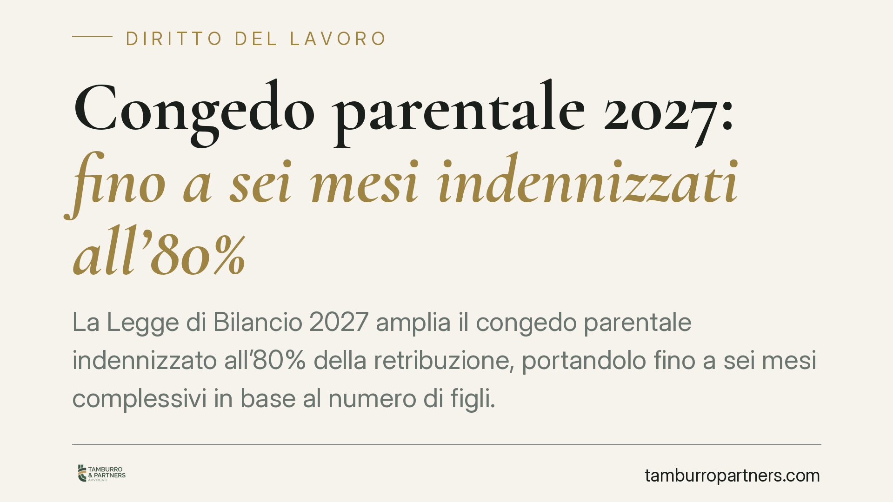
Congedo parentale 2027: fino a sei mesi indennizzati all'80%
La Legge di Bilancio 2027 amplia il congedo parentale indennizzato all'80% della retribuzione, portandolo fino a sei mesi complessivi in base al numero di figli. Restano da chiarir…
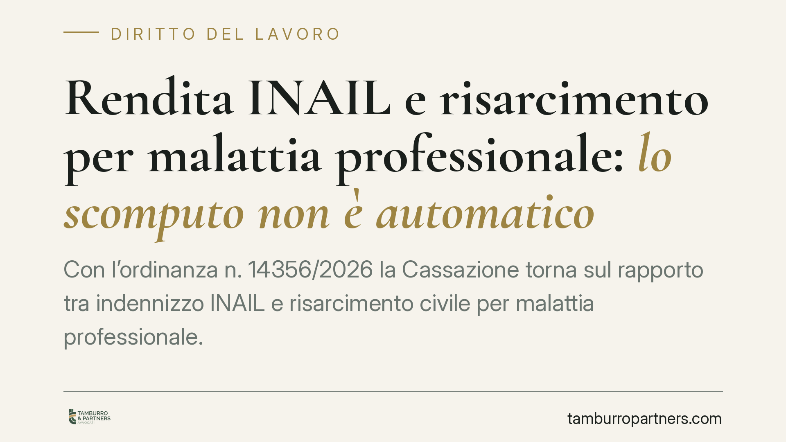
Rendita INAIL e risarcimento per malattia professionale: lo scomputo non è automatico
Con l'ordinanza n. 14356/2026 la Cassazione torna sul rapporto tra indennizzo INAIL e risarcimento civile per malattia professionale. Il principio è netto: la rendita si scomputa s…
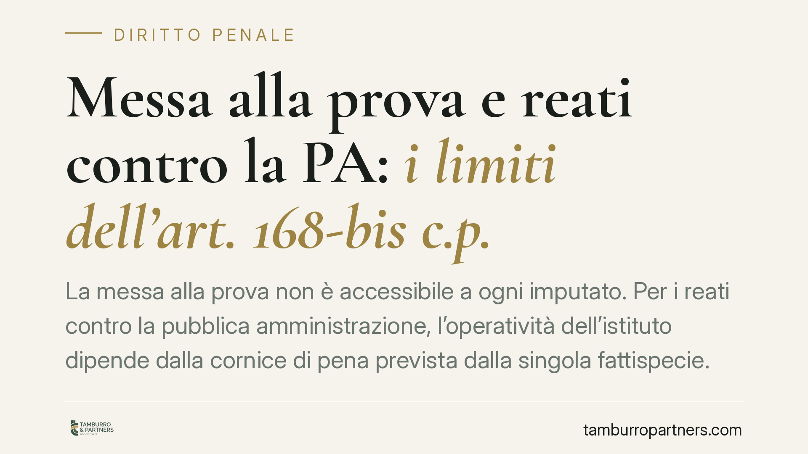
Messa alla prova e reati contro la PA: i limiti dell'art. 168-bis c.p.
La messa alla prova non è accessibile a ogni imputato. Per i reati contro la pubblica amministrazione, l'operatività dell'istituto dipende dalla cornice di pena prevista dalla sing…
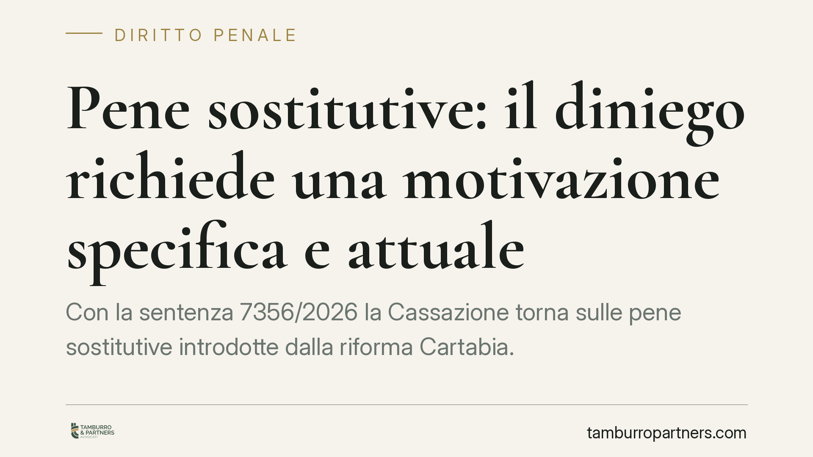
Pene sostitutive: il diniego richiede una motivazione specifica e attuale
Con la sentenza 7356/2026 la Cassazione torna sulle pene sostitutive introdotte dalla riforma Cartabia. Il messaggio è netto: il giudice che nega la sostituzione della pena detenti…
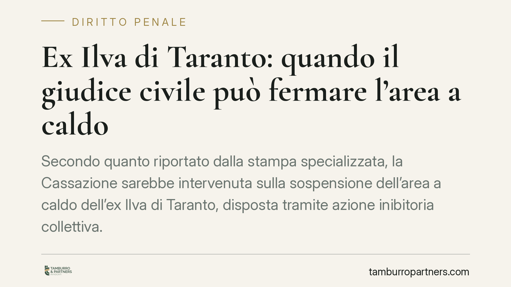
Ex Ilva di Taranto: quando il giudice civile può fermare l'area a caldo
Secondo quanto riportato dalla stampa specializzata, la Cassazione sarebbe intervenuta sulla sospensione dell'area a caldo dell'ex Ilva di Taranto, disposta tramite azione inibitor…
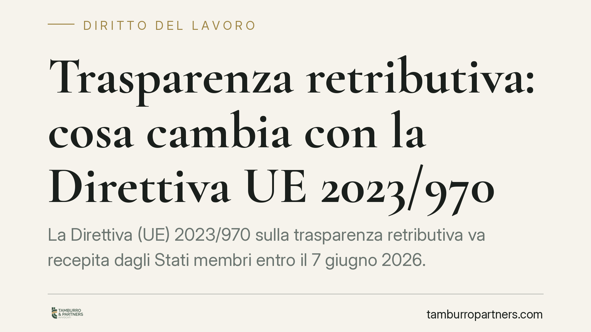
Trasparenza retributiva: cosa cambia con la Direttiva UE 2023/970
La Direttiva (UE) 2023/970 sulla trasparenza retributiva va recepita dagli Stati membri entro il 7 giugno 2026. Introduce il divieto di chiedere ai candidati lo storico degli stipe…
Assenza ingiustificata e contributi INPS: quando sono dovuti
Il datore deve versare i contributi INPS per i giorni di assenza ingiustificata del dipendente? La risposta dipende dal diritto o meno alla retribuzione in quei giorni. Recenti pro…
Rissa tra colleghi in ufficio: quando risponde il datore di lavoro
Se un dipendente viene ferito in una rissa con un collega, l'azienda ne risponde sempre? La giurisprudenza di legittimità esclude la responsabilità del datore quando l'aggressione …
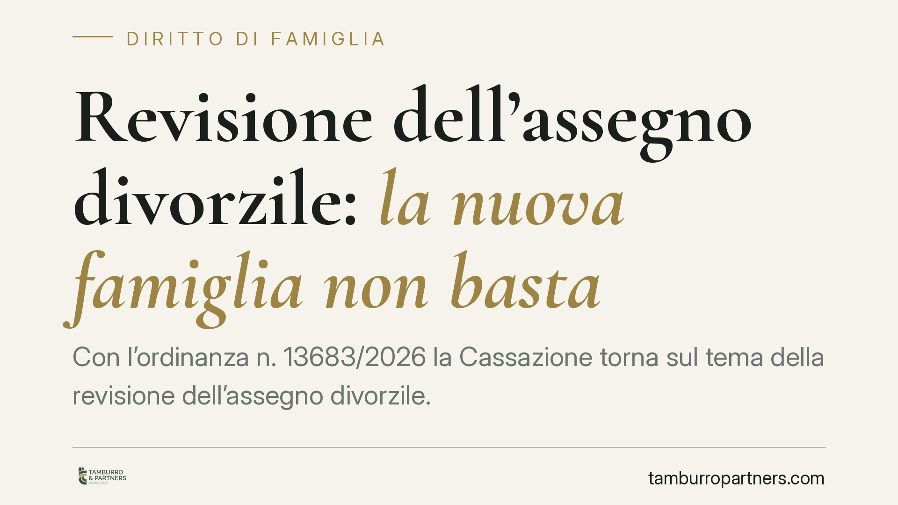
Revisione dell'assegno divorzile: la nuova famiglia non basta
Con l'ordinanza n. 13683/2026 la Cassazione torna sul tema della revisione dell'assegno divorzile. Formare una nuova famiglia, da sola, non giustifica la riduzione o la cancellazio…
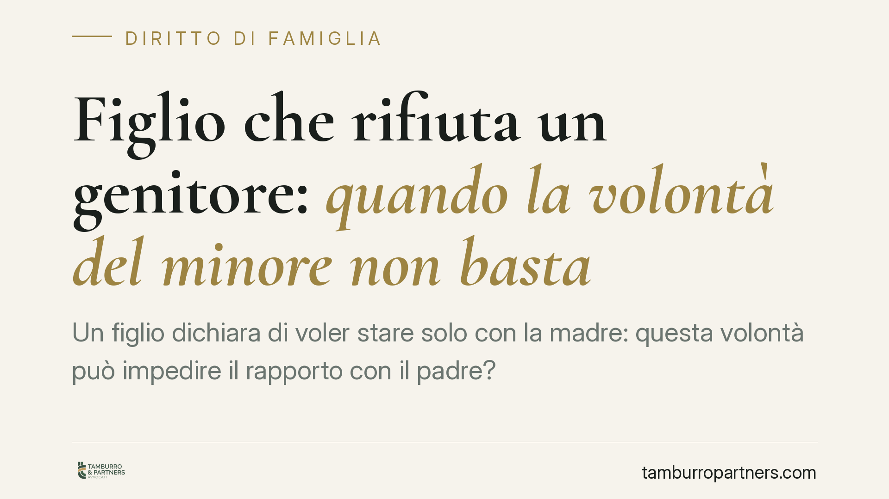
Figlio che rifiuta un genitore: quando la volontà del minore non basta
Un figlio dichiara di voler stare solo con la madre: questa volontà può impedire il rapporto con il padre? La Cassazione ribadisce che il desiderio del minore va ascoltato, ma non …
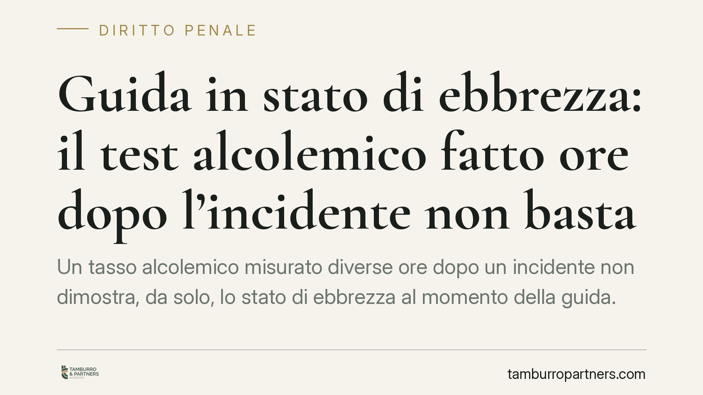
Guida in stato di ebbrezza: il test alcolemico fatto ore dopo l'incidente non basta
Un tasso alcolemico misurato diverse ore dopo un incidente non dimostra, da solo, lo stato di ebbrezza al momento della guida. Serve una valutazione scientifica che ricostruisca l'…
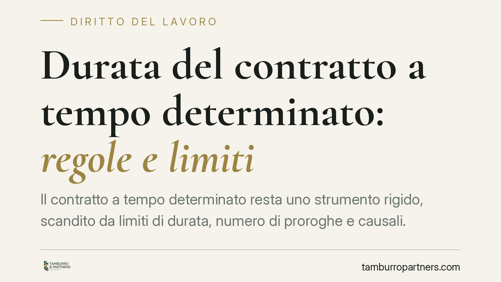
Durata del contratto a tempo determinato: regole e limiti
Il contratto a tempo determinato resta uno strumento rigido, scandito da limiti di durata, numero di proroghe e causali. Comprenderne i vincoli è decisivo: un errore nella gestione…
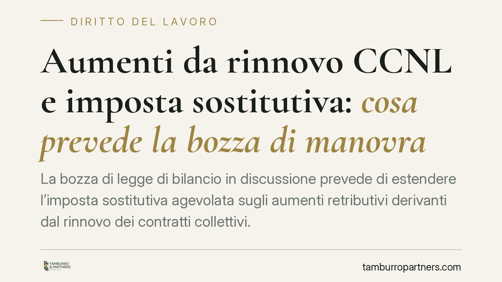
Aumenti da rinnovo CCNL e imposta sostitutiva: cosa prevede la bozza di manovra
La bozza di legge di bilancio in discussione prevede di estendere l'imposta sostitutiva agevolata sugli aumenti retributivi derivanti dal rinnovo dei contratti collettivi. La misur…
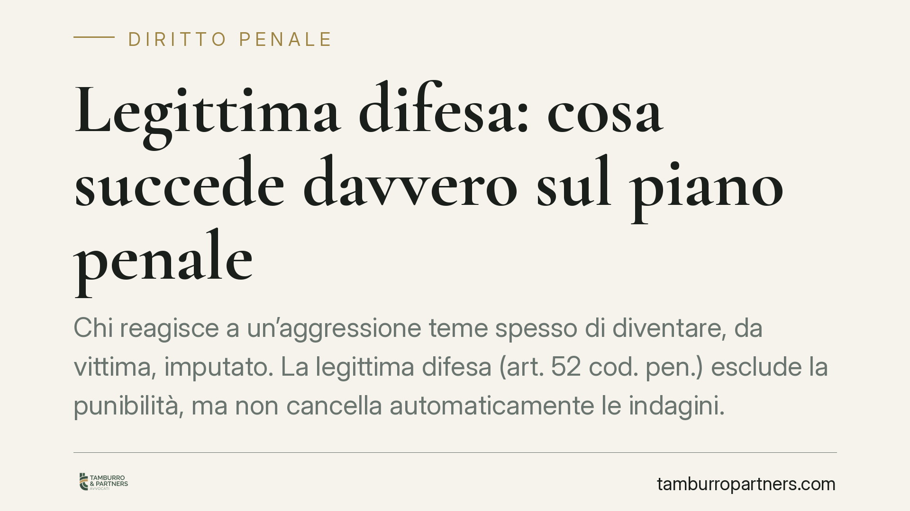
Legittima difesa: cosa succede davvero sul piano penale
Chi reagisce a un'aggressione teme spesso di diventare, da vittima, imputato. La legittima difesa (art. 52 cod. pen.) esclude la punibilità, ma non cancella automaticamente le inda…
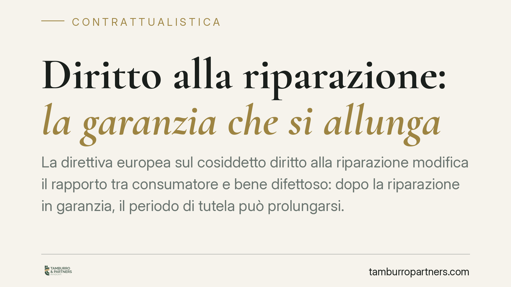
Diritto alla riparazione: la garanzia che si allunga
La direttiva europea sul cosiddetto "diritto alla riparazione" modifica il rapporto tra consumatore e bene difettoso: dopo la riparazione in garanzia, il periodo di tutela può prol…
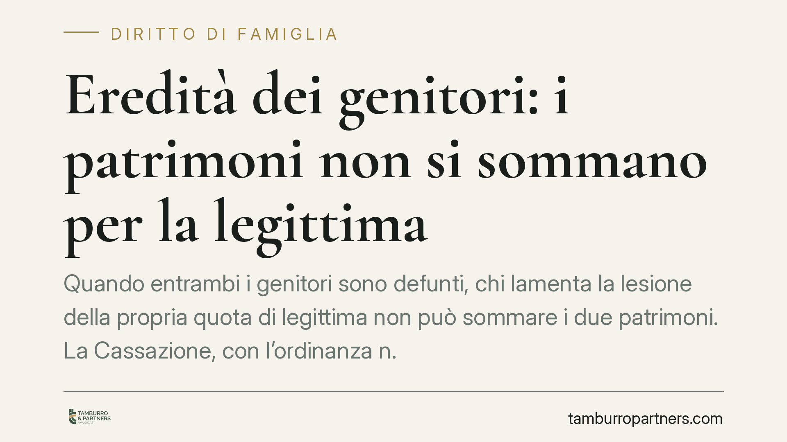
Eredità dei genitori: i patrimoni non si sommano per la legittima
Quando entrambi i genitori sono defunti, chi lamenta la lesione della propria quota di legittima non può sommare i due patrimoni. La Cassazione, con l'ordinanza n. 24242/2026, riba…
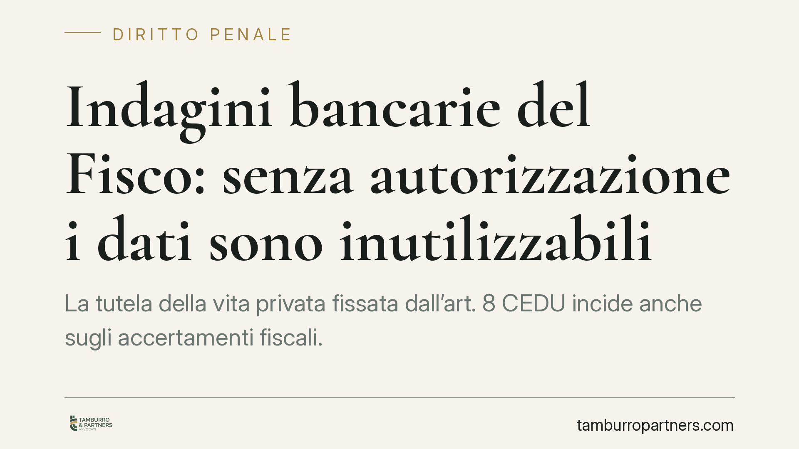
Indagini bancarie del Fisco: senza autorizzazione i dati sono inutilizzabili
La tutela della vita privata fissata dall'art. 8 CEDU incide anche sugli accertamenti fiscali. Secondo recenti pronunce, i dati bancari raccolti senza autorizzazione preventiva, mo…

Liti sulle parti comuni: quando serve coinvolgere tutti i condòmini
Con la sentenza n. 20993/2025 la Corte di Cassazione fissa un paletto netto: nelle controversie sulle parti comuni tra amministratore e singolo condòmino, il giudice può valutare l…

Patto di prova senza mansioni: nullità e rapporto a tempo indeterminato
Un patto di prova che non indica le mansioni affidate al lavoratore è affetto da nullità. La conseguenza civilistica è precisa: la clausola cade, ma il contratto resta in piedi com…

Reati del figlio minorenne: quando risponde il genitore
Un decreto-legge intervenuto nell'ottobre 2026 avrebbe introdotto una sanzione amministrativa a carico dei genitori per taluni reati violenti commessi dai figli minorenni. Il testo…

Tetto condominiale e condominio parziale: a chi spettano le spese
Quando un complesso immobiliare è composto da più edifici, non è detto che il tetto del primo riguardi tutti. Se la copertura serve solo quel fabbricato, le spese gravano sui suoi …

IMU sulla casa assegnata all'ex: l'esenzione resta con i figli maggiorenni?
Una recente pronuncia della Corte di Giustizia Tributaria di primo grado di Prato chiarisce un punto delicato: l'esenzione IMU sulla casa familiare assegnata all'ex coniuge non vie…

Pagamento generico e imputazione: perché il bonifico non basta a estinguere il debito
Un bonifico senza causale precisa non cancella automaticamente il debito contestato. Lo ribadisce la Corte di Cassazione: quando esistono più debiti verso lo stesso creditore, è il…

Mantenimento ai figli e disoccupazione: quando scatta il reato
Perdere il lavoro non cancella l'obbligo di mantenere i figli. La giurisprudenza di merito e di legittimità è costante: l'omesso versamento dell'assegno può integrare reato anche i…

Rinuncia del difensore non comunicata e termini per l'appello penale
La rinuncia del difensore al mandato, se non comunicata all'imputato, può integrare un caso fortuito idoneo a fondare la restituzione nel termine per proporre appello. Non si tratt…